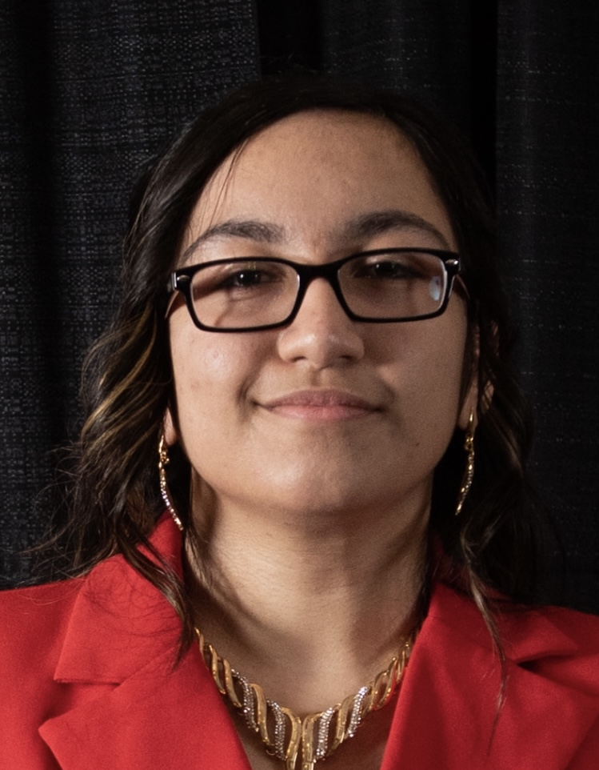

3rd Year Mechatronics Engineering Student
University of Waterloo

Heyu, I'm Eeman Aleem, a 3rd-year Mechatronics Engineering student at the University of Waterloo! I am currently seeking GNC & Embedded Software Engineering internships in the space and aerospace industry where I can apply my experience in embedded software, control algorithms, and low-level firmware development.
In my previous internships, I've worked as a(n):
Beyond my industry experience, I am the Embedded Flight Software (EFS) and Controls Lead for the Waterloo Aerial Robotics Group (WARG) student design team, where I direct the controls software, firmware and system architectural development on a 100+ member UAV subteam. In the past, I've been the Firmware & Software Lead for the UW Deep Blue design team building an autonomous aquatic drone for the RoboSub competition!
I'm incredibly passionate about astrophysics, controls and embedded systems, and what space has to offer in terms of exploration, research, and innovation! I'm also an avid high-fantasy author. I love that the millennia-old, human, tradition with the stars in our stories has fuelled our drive to explore the universe and deep unknown beyond it.
Created a 3D model and implemented innovative character animations in a 3D environment using Blender, Onshape and Sketchfab. Manipulated light, color, and shadow to efficiently convey cinematic motion.